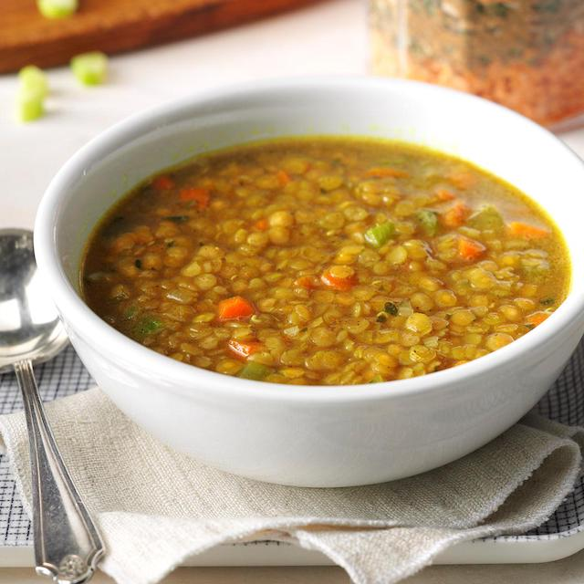

Lentil Soup

Description
Start your year and your meal with a delicious lentil soup. Romans gave leather bags of legumes to their friends with the hope they would turn to gold. Maybe they thought their friends were Rumpelstiltskin?
This recipe is a Turkish-style lentil soup (mercimek çorbasi). We can still keep our fingers crossed that you end with a bag of gold coins.
The preparation for this soup is quick and easy. I find letting it sit and simmer for a long time adds to its richness and flavor, but it's not necessary. It is also much easier to make with an immersion blender, but any food processor will do.
Ingredients
Lentil Soup is very forgiving, so play around with the quantities in the recipe to make it your own.
- 1 cup of dry red lentils (green lentils can be substituted if you cannot find the red)
- 3 cups of broth or water
- 1 large carrot, peeled and diced
- 1 medium yellow onion, diced
- olive oil to saute onion and carrots (apprx 1/2 Tbs)
- 1/2 tsp salt
- 1/4 tsp pepper
- 1 Tbsp cumin
- fresh squeezed lemon juice and/or lemon wedges
- additional salt, pepper, and cumin to taste
Steps
- Rinse the lentils and set aside. You can soak them in cold water ahead of of time if you want to reduce the cooking time
- In a large pot, saute carrot and onion in oil until soft
- Stir in salt, pepper, and cumin.
- Add lentils and broth and bring to a boil.
- Cover and reduce to a simmer.
- Simmer for at least 20 minutes or until the lentils are soft.
- Remove from heat and use immersion blender to blend until smooth. How long you blend is up to personal preference for texture and thickness.
- Season to taste.
- Serve with fresh squeezed lemon juice or lemon wedges to taste.
Enjoy!